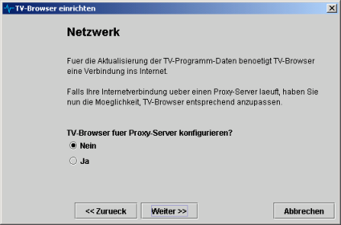

Der Einrichtungsassistent hilft Ihnen, TV-Browser neu einzurichten.
Er führt Sie durch die wichtigsten Einstellungen wie Internetzugang und Sendereinstellungen.
Rufen Sie den Einrichtungsassistenten über das Menü Hilfe --> Einrichtungsassistent auf.
